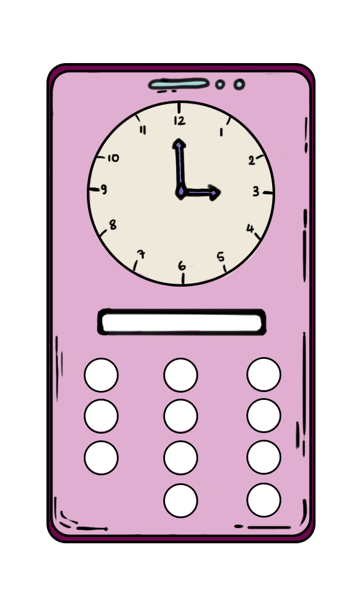
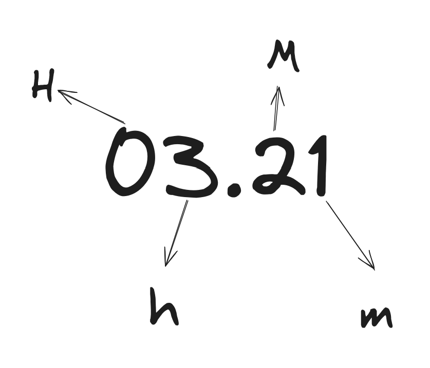
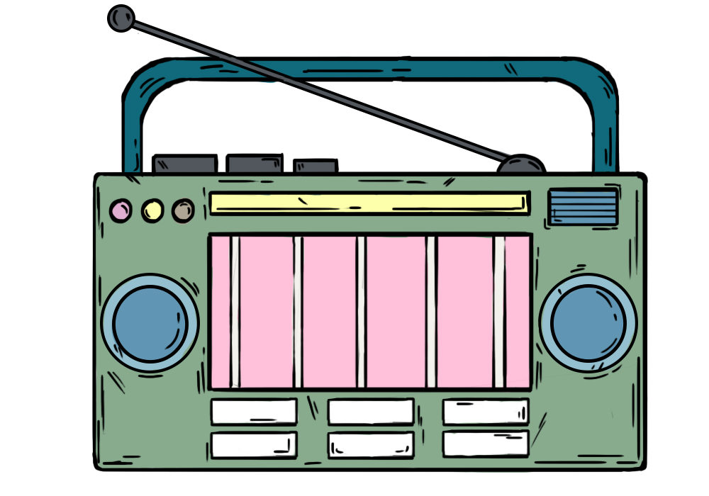

Forgot Password
Pelanggan telah melupakan passwordnya. Kamu akan membantu pelanggan untuk membuka handphonenya. Di layar akan terlihat sebuah jam dan 9 tombol untuk memasukkan password. Password berupa 4 buah angka. Kamu dapat mengetahui passwordnya dengan melihat jam yang ada di layar.

Buku ini akan menggunakan sebutan H, h, M, dan m sebagai panduan untuk mendapatkan password.

- Jika nilai menitnya berupa angka genap, maka jamnya akan ditulis dalam penulisan jam 0-11
- Contoh: 03.20 -> karena nilai menitnya 20, dan 20 adalah angka genap, maka jamnya tetap ditulis sebagai 03.
- Jika nilai menitnya berupa angka ganjil, maka jamnya akan ditulis dalam penulisan jam 12-23.
- Contoh: 03.21 -> karena nilai menitnya 21, dan 21 adalah angka ganjil, maka jamnya ditulis sebagai 15.
- Jika jarum jam ada di depan jarum menit, tepat di bawah jarum menit, atau tepat di atas jarum menit, maka passwordnya akan ditulis dalam bentuk mMhH
- Contoh: 03.21 -> 1230 atau 15.21 -> 1251
-
Jika jarum jam ada di belakang jarum menit, maka ada 2 kemungkinan:
- Jika jarum jam ada di antara angka 12 sampai 6, maka passwordnya akan ditulis dalam bentuk MmHh
- Contoh: 03.21 -> 2103 atau 15.21 -> 2115
- Jika jarum jam ada di antara angka 6 sampai 12, maka passwordnya akan ditulis dalam bentuk HhMm
- Contoh: 03.21 -> 0321 atau 15.21 -> 1521
Jika jarum jam ada di depan jarum menit, ada di seberang jarum menit, atau tempatnya sama dengan jarum menit, maka passwordnya akan ditulis dalam bentuk mMhH.
Contoh: 03.21 -> 1230 atau 15.21 -> 1251
Jika jarum jam ada di belakang jarum menit, maka ada 2 kemungkinan:
Jika jarum jam ada di antara angka 12 sampai 6, maka passwordnya akan ditulis dalam bentuk MmHh.
Contoh: 03.21 -> 2103 atau 15.21 -> 2115
Jika jarum jam ada di antara angka 6 sampai 12, maka passwordnya akan ditulis dalam bentuk HhMm.
Contoh: 03.21 -> 0321 atau 15.21 -> 1521
Wires and Dialpads
Radio pelanggan ada kerusakan. Kamu akan membantu pelanggan untuk memperbaiki handphonenya. Di layar akan terlihat 3-5 kabel dengan berbagai macam warna dan 6 tombol berisi angka dan berwarna juga. Kamu akan memencet beberapa tombol yang ada berdasarkan aturan-aturan dibawah ini:

- Jika kabelnya ada 4, tekan semua tombol dengan warna yang sama dengan kabel ketiga
- Selain itu, jika kabel di posisi pertama berwarna hijau, tekan semua angka ganjil dari yang terkecil sampai yang terbesar.
- Selain itu, jika ada 3 kabel, jumlahkan semua angka di tombol, lalu bagi 6, lalu pencet 3 tombol yang angkanya paling dekat dengan angka yang sudah dibagi itu.
- Selain itu, cari total kabel dengan warna terbanyak, lalu tekan semua angka yang ada di kelipatan jumlah kabel terbanyak itu.
Shapes & Numbers
Di layar akan terlihat sebuah bangun datar dan 12 tombol angka, dan ada 3 tombol yang menyala. Kamu harus menekan tombol-tombol yang ada di layar berdasarkan bangun datar yang ada di layar. Aturannya bisa dibaca di bawah ini
- Jika bangun datar yang muncul adalah persegi, maka jumlahkan angka dari 3 tombol yang menyala, lalu tekan 3 tombol yang bila dijumlahkan akan lebih besar dari hasil penjumlahan dari 3 tombol yang menyala.
- Jika bangun datar yang muncul adalah segitiga, maka jumlahkan angka dari 2 tombol yang menyala, lalu tekan 2 tombol yang bisa dikalikan, nilainya sama dengan hasil penjumlahan dari 3 tombol yang menyala.
- Jika bangun datar yang muncul adalah lingkaran, maka tekan 2 tombol yang bila dijumlahkan, hasil penjumlahannya ada di kelipatan dari salah satu angka dari 3 tombol yang menyala.